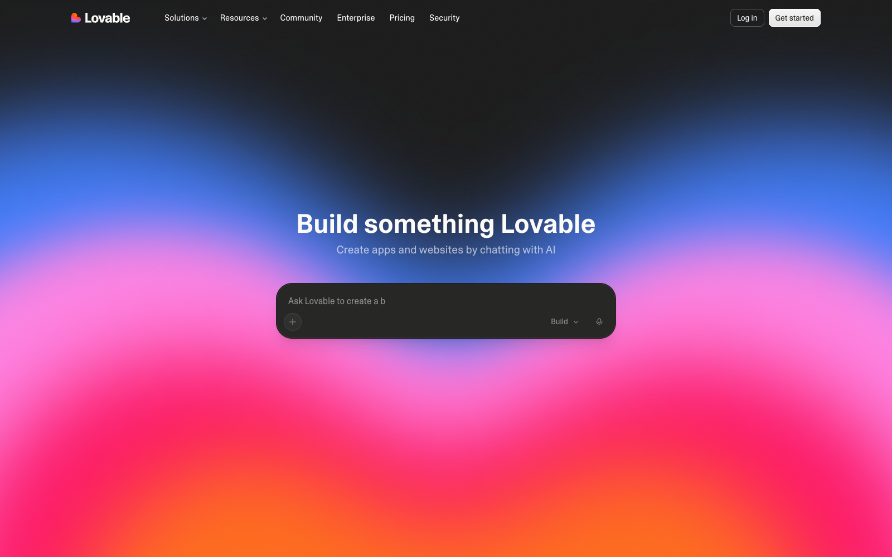
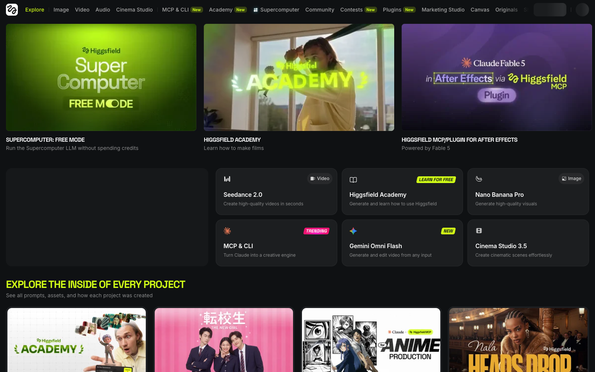
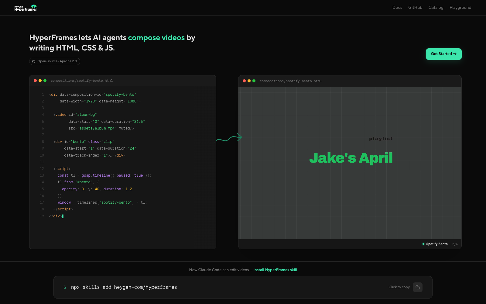

Product details and supporting examples from the original September 2026 deck.
Check availability, prices and limits with the linked primary sources.
Don't worry about memorising these — every one gets a slide of its own. This is just your map.
| Maker | Flagship lineup (September 2026) | Known for |
|---|---|---|
| Anthropic | Claude Fable 5.1 · Opus 5.5 · Sonnet 5 · Haiku 4.5 | coding, agents, long context |
| OpenAI | GPT‑6 — Astra · Sol · Luna | general reasoning, Codex |
| Gemini 3.8 Flash · 3.5 Flash‑Lite (3.5 Pro still unreleased) | multimodal, large context |
The same three tiers repeat everywhere: large (smartest, priciest) · medium (the sweet spot) · small (fast & cheap) — and Anthropic adds a frontier tier on top (Claude Fable 5.1). It reshuffles every few months, so treat any list as a snapshot. How fast does it move? —
SWE-bench Verified — Opus 5 fixing real bugs in real code projects
ARC-AGI-3 — GPT‑6 Astra scores 63%, twice the next-best model, on puzzles built to resist memorising
how long "what AI can't do" assumptions stay true
Hard reasoning, tricky multi-file refactors, architecture. Pricier per word — but on hard work it gets there in fewer steps.
The daily driver. Most coding & agent work. Often beats last gen's flagship at a fraction of the cost.
High-volume, simple, fast: classification, quick edits, sub-agent grunt work.
Example: a cheap Haiku sub-agent skims 200 files and summarises; the pricey Opus only does the actual design call. Cheap legwork, expensive thinking only where needed. But "pricey" is per word, not per job — that turns out to matter, and we come back to it in a few slides.
Anthropic. CLI + IDE + web. Agentic coding over your whole repo.
OpenAI's coding agent on GPT‑6 — in your terminal, with a cloud option.
An IDE built around an AI agent.
Agent + autocomplete inside your editor.
Another agentic IDE (ex‑Windsurf).
Open-source terminal coding agent.
The harness decides what the model can actually do — tools, sandboxing, memory, parallelism. At least as important as the model.

Example: "Build an expense tracker: add expenses, a monthly chart, login." → minutes later, a running app on a shareable link — source code included.

Example: "A 15-second ad for our mobile bank: phone in hand, city at dusk, upbeat." → storyboard → shots → rendered clip, ready for social.

Example: "Turn this slide's diagram into a 20-second animated explainer." → the agent writes the HTML, renders it, hands you the MP4.
| Tier | Claude (Anthropic) | ChatGPT (OpenAI) |
|---|---|---|
| Free | limited usage | limited usage |
| Entry | Pro — ~$20/mo | Go ~$8 · Plus ~$20/mo |
| Power | Max 5× ~$100 · Max 20× ~$200/mo | Pro 5× ~$100 · Pro 20× ~$200/mo (20× sign-ups paused) |
Higher tiers buy more usage and priority access to the newest models. Prices as of September 2026 — they change often, so verify before quoting.
A low unit price can be offset by more tool calls, reasoning and failed attempts.
A more capable model can win on a difficult task. Measure rather than assuming it will.
Compare the same task and acceptance check. Include all attempts, cached input, fresh input and output.
Keep approvals where the environment cannot safely contain the consequence.
All figures verified September 2026. Models & prices move fast — re-check the primary sources before quoting.